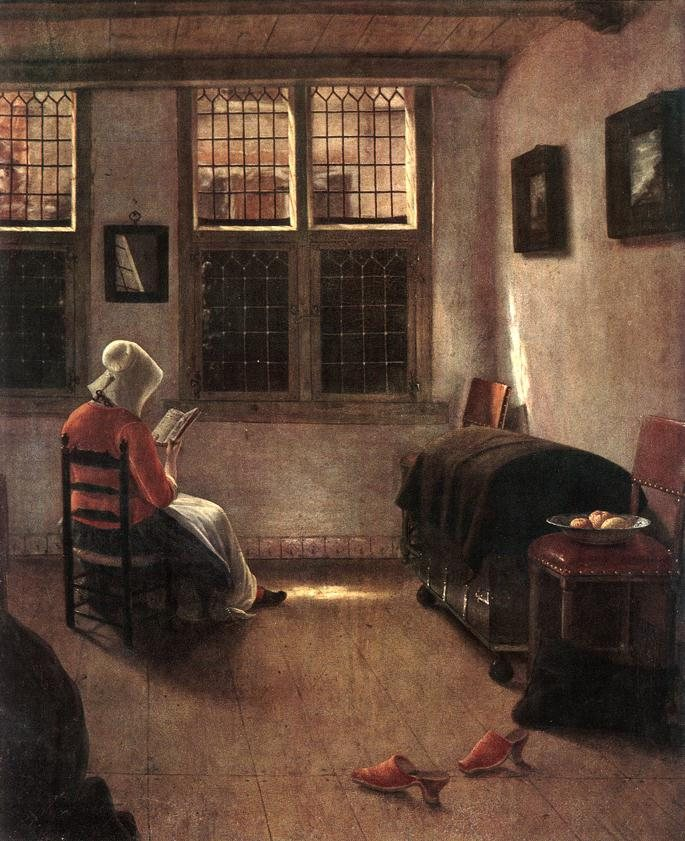
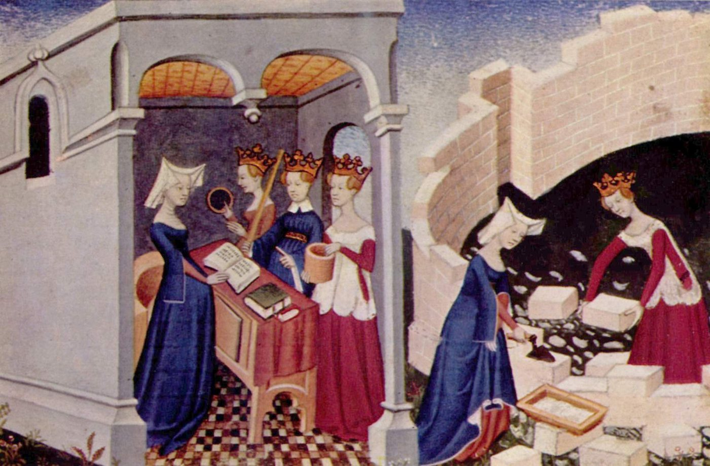
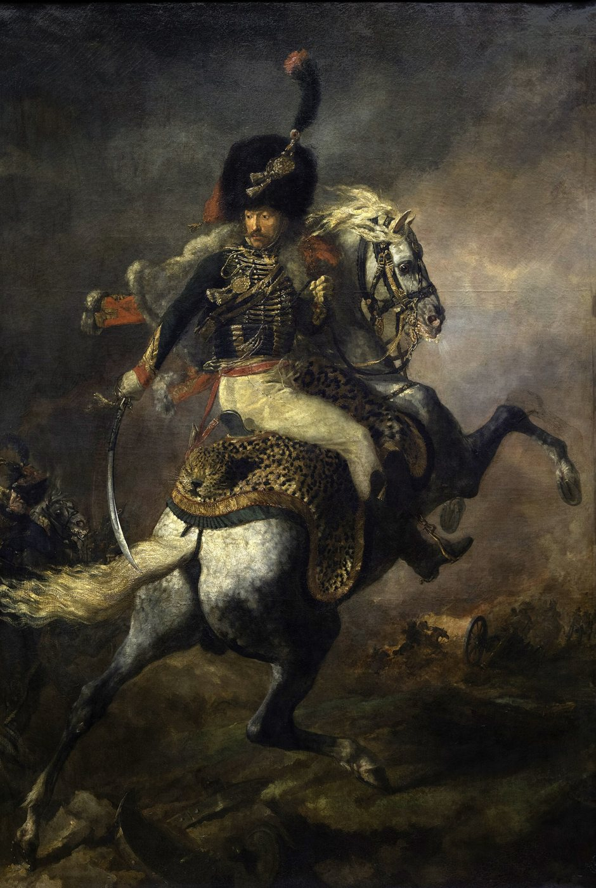
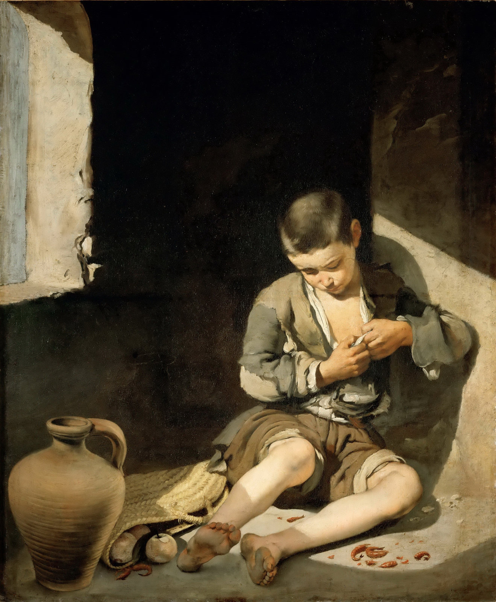
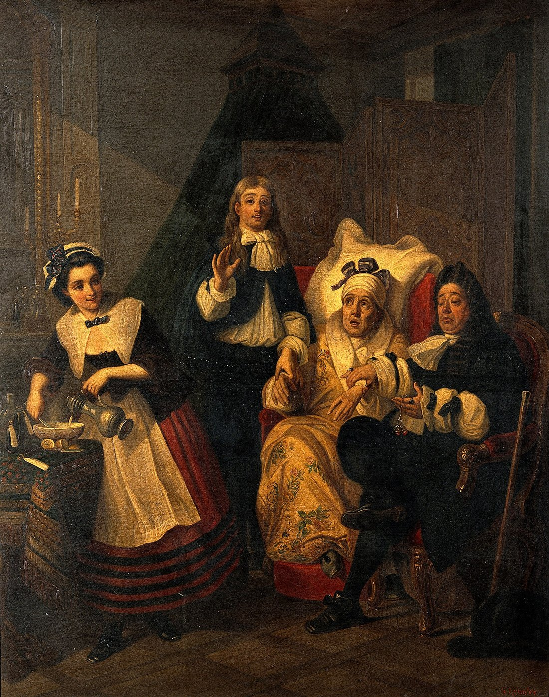
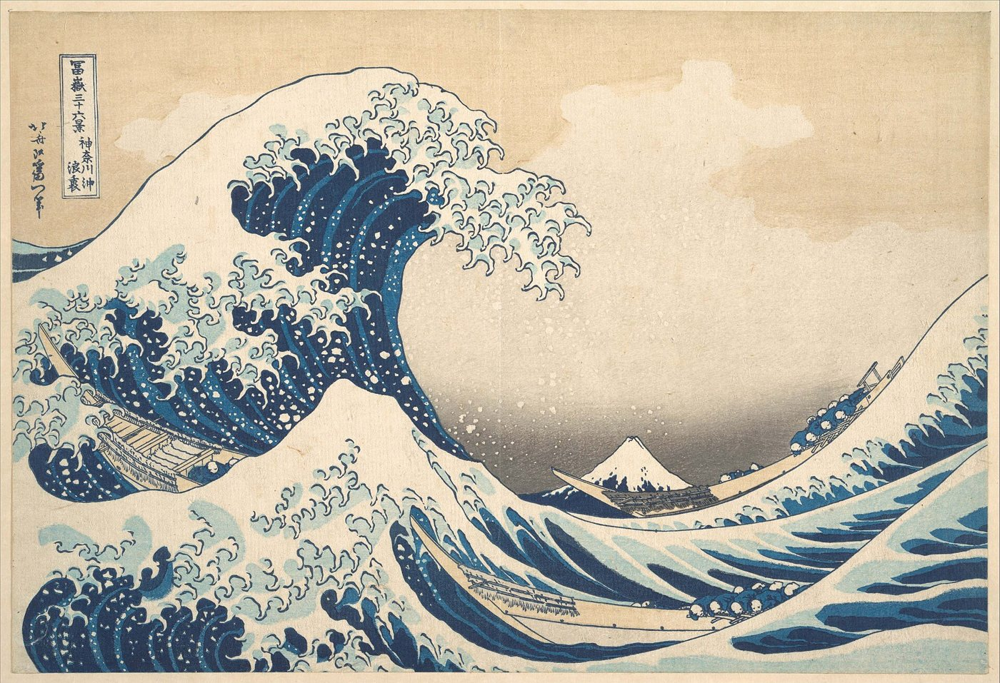
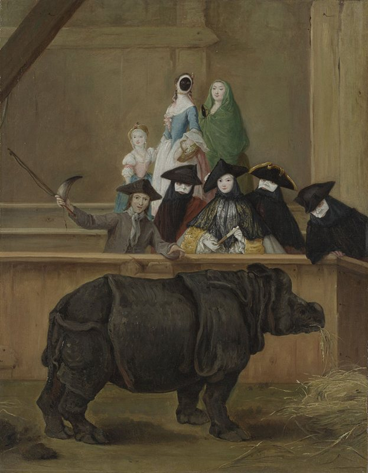

Les progressions de l'année · Seconde générale et technologique
Carole Paoli Pompougnac
Une année de français en Seconde
Voici le parcours de l'année pour la Seconde générale et technologique. Chaque séquence part d'une vraie question, que les élèves cherchent à résoudre avec les textes.
« Je n'ai jamais eu de chagrin qu'une heure de lecture ne m'ait ôté. »
Montesquieu, Mes pensées, XVIIIe siècle
Ce que l'on trouve dans chaque séquence
Une problématique
Une question ouverte, pas un simple thème.
Un tableau de maître en couverture
Il ouvre la séquence et fait entrer dans le monde de l'auteur.
La spirale de Gorse
Pour lire un texte tour après tour, jusqu'au sens.
Des leçons de 52 minutes
Montre en main, avec un point d'arrêt et une sortie de secours.
La langue chaque jour
Grammaire, lexique, Projet Voltaire, dictées courtes, flashcards.
Des évaluations régulières
Diagnostique, ponctuelles, mi-parcours et sommative.
Comment lire ces pages
Chaque onglet présente ensuite une séquence : sa couverture, sa problématique, les textes, le tableau des leçons et les évaluations.
Les séquences seront ensuite détaillées une par une, leçon par leçon, avec la fiche professeur, la fiche de correction, la version dys et les fiches élèves.
Les onglets se masquent avec la croix. Le bouton « Réafficher les onglets masqués » les fait revenir. En version élève, les encadrés roses et les réponses disparaissent : la page se projette telle quelle au tableau numérique.
Cette page présente le parcours de la Seconde générale et technologique. Le parcours de la Seconde professionnelle a sa propre page : Le français en Seconde professionnelle.
Un principe d'apprentissage innovant : la spirale de Gorse
Lire un texte, c'est une escalade, prise après prise, jusqu'au sommet. On commence par ce qui saute aux yeux. À chaque tour, on serre un peu plus le texte, jusqu'à la pointe : le sens.
Les cinq étapes
Tour
Je…
Ce que je fais
Exemple de question
1
Je remarque
Ce qui saute aux yeux : un mot répété, une forme, un titre, une image.
Qu'est-ce qui me frappe tout de suite ?
2
Je repère
Je relève des indices précis dans les lignes du texte.
Où, à quelles lignes, est-ce que je le vois ?
3
Je comprends
Je relie les indices entre eux et je les explique.
Qu'est-ce que ces indices ont en commun ?
4
J'anticipe
Je fais une hypothèse sur ce que le texte cherche à faire.
Où l'auteur veut-il m'emmener ?
5
Je trouve le sens
Je réponds à la problématique, avec mes preuves.
Que me dit ce texte, à moi, aujourd'hui ?
La règle d'or
À chaque tour, l'idée s'écrit à l'extérieur de la spirale. Les lignes du texte s'écrivent à l'intérieur.
Le brouillon du commentaire et de la dissertation suit la même spirale.
La mise en page modèle est celle des Grizzlies : la spirale, puis le tableau des étapes, des grilles à cocher, une version dys, la fiche professeur et le corrigé en tête. Chaque séquence indique le texte sur lequel la spirale est travaillée.
Méthode de la spirale conçue par Madame Carole Paoli Pompougnac
Seconde générale et technologique
Seconde générale et technologique
La progression de l'année

Pieter Janssens Elinga, Femme lisant
Huile sur toile, vers 1668 à 1670, Munich, Alte Pinakothek. Domaine public, via Wikimedia Commons. Voir l'œuvreUne femme lit, le dos tourné, dans une pièce pleine de lumière : l'année commence par le goût de lire.
Ce que demande le programme (BO spécial n° 1 du 22 janvier 2019, programme de français de seconde générale et technologique)
Quatre objets d'étude : la poésie du Moyen Âge au XVIIIe siècle ; la littérature d'idées et la presse du XIXe au XXIe siècle ; le roman et le récit du XVIIIe au XXIe siècle ; le théâtre du XVIIe au XXIe siècle.
Quatre œuvres intégrales et deux parcours par an. Roman et récit : deux œuvres de forme et de siècle différents, un roman et, par ailleurs, un récit d'une autre forme. Théâtre : deux pièces de genre et de siècle différents. La poésie et la littérature d'idées se travaillent en parcours, par groupements de textes.
Au moins trois lectures cursives, distinctes des œuvres étudiées en classe.
Une évaluation des acquis en début d'année.
Une première approche des exercices du baccalauréat : commentaire, dissertation, contraction de texte suivie d'un essai.
Les cinq objectifs du programme
Améliorer la compréhension et l'expression, à l'oral comme à l'écrit, par un travail continu sur la langue.
Faire lire et apprécier les œuvres, pour construire une culture littéraire commune, ouverte aux autres arts.
Former le sens esthétique et renforcer l'analyse et l'interprétation.
Développer le jugement critique, la réflexion personnelle et l'argumentation.
Rendre l'élève autonome et responsable, notamment dans la recherche documentaire.
Les séquences
Période
Séquence
Objet d'étude
Œuvre
Leçons
Septembre
Évaluation diagnostique de rentrée
Toutes
Textes courts
2
Sept. à oct.
1. Le droit d'aimer, le droit de souffrir
Poésie
Groupement, cursive : Louise Labé
9
Nov. à déc.
2. Le soldat que l'on croyait mort
Roman et récit
Balzac, Le Colonel Chabert
10
Janvier
3. Plume dans la plaie
Littérature d'idées et presse
Groupement, cursive : Albert Londres
9
Février à mars
4. Rire de ce qui fait peur
Théâtre
Molière, Le Malade imaginaire
10
Mars à avril
5. Garder sa voix
Roman et récit
Amélie Nothomb, Stupeur et tremblements
9
Mai à juin
6. Le dernier homme debout
Théâtre
Ionesco, Rhinocéros
10
Le calendrier de l'année 2026-2027
Rentrée le mardi 1er septembre 2026. Les vacances d'hiver et de printemps changent selon la zone, mais le nombre de semaines de cours de chaque période reste le même en zones A, B et C. Les dates des séquences sont celles du fichier, sans changement.
Seconde générale et technologique : 4 heures de français par semaine.
Période
Séquences
Semaines de cours
Créneaux de 52 min
Leçons prévues
Bilan
Sept. à oct.
Diagnostic (2) et séquence 1 (9)
11
Toussaint du 17 octobre au 2 novembre 2026
Nov. à déc.
Séquence 2
10
11 novembre férié ; Noël à partir du 19 décembre
Janvier
Séquence 3
9
Reprise le 4 janvier 2027
Février à avril
Séquence 4 (10) et séquence 5 (9)
19
Vacances d'hiver et de printemps, lundi de Pâques
Mai à juin
Séquence 6
10
Ascension et pont du 7 mai, lundi de Pentecôte ; en juin, les examens peuvent avancer la fin des cours
Les créneaux restants servent aux dictées, au Projet Voltaire, aux corrections, aux devoirs et aux imprévus. Aucune leçon n'a été ajoutée.
La langue sur l'année
Séquence
Point du programme
Projet Voltaire
1
Les accords dans le groupe nominal et entre le sujet et le verbe
Accord de l'adjectif, sujet inversé
2
Le verbe : valeurs des temps du récit
Passé simple et imparfait, -ai ou -ais
3
Les relations dans la phrase complexe
Quoique ou quoi que, quel que
4
Le lexique : formation des mots
Préfixes et suffixes, homophones
5
Les subordonnées relatives
Dont, lequel, auquel
6
Le verbe : concordance des temps
Participe passé avec avoir
Seconde générale et technologique · Séquence 1 · La poésie du Moyen Âge au XVIIIe siècle
À caler : Sept. à oct. · 9 leçons
Séquence déjà en préparation
« Je me donnais le droit d'aimer, je me donne le droit de souffrir »

Maître de la Cité des Dames, Christine de Pizan et les trois Vertus, la construction de la Cité des Dames
Enluminure sur parchemin, début du XVe siècle, Paris, Bibliothèque nationale de France, manuscrit Français 607, folio 2. Domaine public, via Wikimedia Commons. Voir l'œuvreÀ gauche, Christine de Pizan à sa table, parmi ses livres, reçoit trois Vertus. À droite, elle bâtit avec elles une cité pour les femmes. Une femme qui écrit : c'est la naissance du « je » en poésie.
Problématique
Comment des femmes poètes ont-elles osé dire « je » pour dire l'amour et la douleur ?
Les textes
Marie de France, « Lai du Chèvrefeuille », XIIe siècle
Christine de Pizan, « Seulete sui », vers 1400
Pernette du Guillet, Rymes, 1545
Louise Labé, Sonnet VIII « Je vis, je meurs », 1555
Antoinette Deshoulières, « Les Moutons », 1677
Lecture cursive : Louise Labé, Sonnets
La spirale de Gorse : sur le sonnet « Je vis, je meurs ». Premier tour : les oppositions qui sautent aux yeux (vivre et mourir, brûler et se noyer).
Les leçons
Chaque leçon dure 52 minutes, montre en main, avec un point d'arrêt et une sortie de secours.
N°
Leçon
Activité dominante
1
Entrer par l'image : une femme qui écrit
Oral, lecture de la couverture
2
Marie de France : l'amour comme un lien de nature
Lecture analytique
3
Christine de Pizan : la solitude devient chant
Lecture à voix haute, rythme du refrain
4
Louise Labé : je vis, je meurs
Spirale de Gorse
5
Évaluation de mi-parcours
Écrit court
6
Pernette du Guillet et Antoinette Deshoulières
Comparaison de deux voix
7
Mon anthologie : présenter un poème de la lecture cursive
Oral de 2 minutes
8
Atelier : bâtir un commentaire
Méthode, brouillon en spirale
9
Évaluation sommative
Commentaire
Les évaluations
Diagnostique
Lire un court poème et dire ce que l'on ressent, en cinq lignes.
Ponctuelles
Dictées flash d'accords (leçons 2, 4, 6) ; quiz de vocabulaire poétique ; lecture à voix haute notée.
Mi-parcours
Repérer et expliquer trois procédés dans un sonnet inconnu.
Sommative
Commentaire guidé de « Seulete sui » : comment la répétition fait-elle entendre la solitude ?
Seconde générale et technologique · Séquence 2 · Le roman et le récit du XVIIIe au XXIe siècle
À caler : Nov. à déc. · 10 leçons
Le soldat que l'on croyait mort

Théodore Géricault, Officier de chasseurs à cheval de la garde impériale chargeant
Huile sur toile, 1812, Paris, musée du Louvre. Domaine public, via Wikimedia Commons. Voir l'œuvreLe héros des guerres de Napoléon, tel que Chabert était avant Eylau. Toute la question du roman : que reste-t-il de cet homme ?
Problématique
Que vaut un homme quand la société ne veut plus le reconnaître ?
L'œuvre et les textes
Œuvre intégrale : Honoré de Balzac, Le Colonel Chabert, 1832
Extraits étudiés : l'arrivée chez l'avoué Derville ; le récit d'Eylau ; la rencontre avec la comtesse ; le dénouement à l'hospice
Lecture cursive : Guy de Maupassant, Boule de suif, 1880
La spirale de Gorse : sur le portrait de Chabert dans l'étude de Derville. Premier tour : le vieux carrick, la cicatrice, le regard.
Les leçons
Chaque leçon dure 52 minutes, montre en main, avec un point d'arrêt et une sortie de secours.
N°
Leçon
Activité dominante
1
Un cavalier, une gloire : entrer par la couverture
Oral
2
Un revenant chez l'avoué
Spirale de Gorse
3
Le récit d'Eylau : raconter l'impossible
Valeurs des temps
4
Paris sous la Restauration : repères d'histoire
Recherche avec le professeur documentaliste
5
Évaluation de mi-parcours
Questions de lecture
6
La comtesse Ferraud : un duel sans armes
Lecture à deux voix
7
L'hospice de Bicêtre : la fin d'un nom
Lecture analytique
8
Chabert et Boule de suif : deux victimes de leur temps
Oral, lecture cursive
9
Atelier dissertation : lire la question pour choisir le plan
Méthode
10
Évaluation sommative
Dissertation
Les évaluations
Diagnostique
Résumer une page de roman en cinq phrases au passé.
Ponctuelles
Quiz de lecture par chapitre ; dictée flash passé simple et imparfait ; carte mentale des personnages.
Mi-parcours
Questions sur le récit d'Eylau : qui parle, à qui, pourquoi ?
Sommative
Dissertation : « Le Colonel Chabert est-il seulement l'histoire d'un soldat oublié ? »
Seconde générale et technologique · Séquence 3 · La littérature d'idées et la presse du XIXe au XXIe siècle
À caler : Janvier · 9 leçons
Porter la plume dans la plaie

Bartolomé Esteban Murillo, Jeune mendiant
Huile sur toile, vers 1645-1650, Paris, musée du Louvre. Domaine public, via Wikimedia Commons. Voir l'œuvreMurillo peint un enfant pauvre, seul, avec dignité : comme Hugo, Zola et Londres, il regarde ceux qu'on ne voit pas et leur donne une place.
Problématique
La presse doit-elle déranger pour être utile ?
Les textes
Victor Hugo, discours sur la misère, Assemblée nationale, 9 juillet 1849
Émile Zola, « J'accuse… ! », L'Aurore, 13 janvier 1898
Albert Londres, Au bagne, 1923, extraits
Un article de presse récent sur le métier de journaliste, choisi dans la presse de l'année
Lecture cursive : Albert Londres, Au bagne
La spirale de Gorse : sur la fin de « J'accuse… ! ». Premier tour : la répétition « J'accuse » qui saute aux yeux.
Les leçons
Chaque leçon dure 52 minutes, montre en main, avec un point d'arrêt et une sortie de secours.
N°
Leçon
Activité dominante
1
Ceux qu'on ne voit pas : la couverture de Murillo
Oral
2
Hugo : « Je ne suis pas, messieurs, de ceux qui croient qu'on peut supprimer la souffrance en ce monde… »
Lecture d'un discours
3
L'affaire Dreyfus : les faits, datés et sourcés
Repères, frise
4
« J'accuse… ! » : la force d'une anaphore
Spirale de Gorse
5
Évaluation de mi-parcours
Contraction courte
6
Albert Londres au bagne : enquêter, témoigner
Lecture analytique
7
Débat : un journaliste doit-il être neutre ?
Oral, débat réglé
8
Atelier : contracter un texte, puis écrire un essai
Méthode
9
Évaluation sommative
Contraction et essai
Les évaluations
Diagnostique
Repérer la thèse d'un court article et la reformuler.
Ponctuelles
Quiz de connecteurs logiques ; dictée flash ; revue de presse orale d'une minute.
Mi-parcours
Contracter un paragraphe de Hugo au quart de sa longueur.
Sommative
Contraction d'un texte sur le journalisme, puis essai : « La presse doit-elle déranger ? »
Seconde générale et technologique · Séquence 4 · Le théâtre du XVIIe au XXIe siècle
À caler : Février à mars · 10 leçons
Rire de ce qui fait peur

Abraham Solomon, Le Malade imaginaire, 1861
Huile sur toile. Version conservée à Londres, Wellcome Collection (V0017233), photo Wellcome Collection, CC BY 4.0, via Wikimedia Commons ; la toile exposée en 1861 à la Royal Academy est à Londres, Ben Uri Collection. Voir l'œuvreActe II, scène 6 : les deux Diafoirus, le père et le fils, tâtent chacun un bras d'Argan et rendent un verdict savant et inquiétant. Argan est terrifié, Toinette n'y croit pas une seconde. Toute la pièce est là : la peur de mourir d'un côté, le rire de l'autre.Ouvrir la séquence 4 en ongletsPrésentation, l'œuvre d'art, les textes, les leçons, la langue, les évaluations, les téléchargements
Problématique
Peut-on rire de la maladie et de la peur de mourir ?
L'œuvre et les textes
Œuvre intégrale : Molière, Le Malade imaginaire, 1673
Scènes étudiées : acte I, scène 1 (les comptes d'Argan) ; acte II, scène 5 (Thomas Diafoirus) ; acte III, scène 10 (Toinette en médecin)
Lecture cursive : Marivaux, L'Île des esclaves, 1725
Des mises en scène filmées, comparées
La spirale de Gorse : sur le monologue des comptes d'Argan. Premier tour : les chiffres, les remèdes, les répétitions.
Les leçons
Chaque leçon dure 52 minutes, montre en main, avec un point d'arrêt et une sortie de secours.
N°
Leçon
Activité dominante
1
Molière parmi les farceurs : entrer dans le théâtre
Oral
2
Argan fait ses comptes
Spirale de Gorse
3
Molière, sa troupe, la dernière représentation
Repères
4
Thomas Diafoirus : le ridicule du savoir
Jeu de la scène
5
Évaluation de mi-parcours
Questions sur une scène
6
Toinette en médecin : le valet mène le jeu
Lecture analytique
7
Trois mises en scène, trois Argan
Comparaison de captations
8
L'Île des esclaves : quand les rôles s'inversent
Oral, lecture cursive
9
Atelier : commenter une scène de théâtre
Méthode
10
Évaluation sommative
Commentaire et jeu
Les évaluations
Diagnostique
Lire une courte scène et dire qui mène le jeu.
Ponctuelles
Quiz par acte ; flashcards du lexique de la médecine ; scène jouée par groupe.
Mi-parcours
Expliquer les procédés comiques d'une réplique de Thomas Diafoirus.
Sommative
Commentaire de l'acte III, scène 10 : comment Molière fait-il rire de la médecine ?
Seconde générale et technologique · Séquence 5 · Le roman et le récit du XVIIIe au XXIe siècle
À caler : Mars à avril · 9 leçons
Séquence déjà en préparation
Garder sa voix

Katsushika Hokusai, La Grande Vague de Kanagawa, série des Trente-six vues du mont Fuji
Estampe gravée sur bois, vers 1830 à 1832, New York, Metropolitan Museum of Art. Domaine public, via Wikimedia Commons. Voir l'œuvreLa vague immense, les barques minuscules, le mont Fuji au loin : la stupeur et les tremblements d'une jeune Belge face au Japon.
La spirale de Gorse : sur l'incipit. Premier tour : les grades de la hiérarchie, qui sautent aux yeux.
Les leçons
Chaque leçon dure 52 minutes, montre en main, avec un point d'arrêt et une sortie de secours.
N°
Leçon
Activité dominante
1
La vague et la barque : entrer par la couverture
Oral
2
L'incipit : une hiérarchie en cascade
Spirale de Gorse
3
L'épisode du café : un geste de politesse qui tourne mal
Lecture analytique
4
Rire de soi : l'autodérision
Subordonnées relatives
5
Évaluation de mi-parcours
Questions de lecture
6
La nuit dans les bureaux : se libérer en rêve
Lecture à voix haute
7
Les Lettres persanes : le regard de l'étranger
Oral, lecture cursive
8
Atelier dissertation : le plan thématique
Méthode
9
Évaluation sommative
Dissertation
Les évaluations
Diagnostique
Raconter en dix lignes un moment où l'on s'est senti étranger.
Ponctuelles
Quiz de lecture ; dictée flash « dont, lequel » ; flashcards du vocabulaire du travail.
Mi-parcours
Analyser le comique d'un passage : qui rit, de qui, comment ?
Sommative
Dissertation : « Comment Amélie Nothomb transforme-t-elle une humiliation en récit ? »
Seconde générale et technologique · Séquence 6 · Le théâtre du XVIIe au XXIe siècle
À caler : Mai à juin · 10 leçons
Le dernier homme debout

Pietro Longhi, Le Rhinocéros, exhibition d'un rhinocéros à Venise
Huile sur toile, vers 1751, Londres, National Gallery. Domaine public, via Wikimedia Commons. Voir l'œuvreEn 1751, la rhinocéros Clara est montrée à Venise. La foule masquée la regarde, fascinée, et personne ne bouge. Une bête qui captive tout le monde à la fois : c'est déjà le sujet d'Ionesco.
Scènes étudiées (références seulement, le texte est protégé) : acte I, l'apparition du rhinocéros ; acte II, la transformation de Jean ; acte III, le monologue final de Bérenger
Lecture cursive : Jean Racine, Andromaque, 1667
La spirale de Gorse : sur le monologue final de Bérenger. Premier tour : la ponctuation et les phrases courtes.
Les leçons
Chaque leçon dure 52 minutes, montre en main, avec un point d'arrêt et une sortie de secours.
N°
Leçon
Activité dominante
1
Le rhinocéros de Longhi : toute une foule qui regarde
Oral
2
Acte I : un rhinocéros passe, on discute logique
Lecture analytique
3
Qu'est-ce que le théâtre de l'absurde ?
Repères
4
Acte II : Jean se transforme
Jeu de la scène
5
Évaluation de mi-parcours
Questions sur une scène
6
Acte III : Bérenger seul
Spirale de Gorse
7
Mettre en scène une métamorphose
Comparaison de captations
8
Andromaque : une autre fin, la tragédie
Oral, lecture cursive
9
Atelier : commentaire d'un monologue
Méthode
10
Évaluation sommative
Commentaire et oral
Les évaluations
Diagnostique
Dire en trois phrases ce qu'est un personnage qui résiste.
Ponctuelles
Quiz par acte ; dictée flash sur le participe passé ; lecture expressive notée.
Mi-parcours
Expliquer ce qui est absurde dans un dialogue de l'acte I.
Sommative
Commentaire du monologue final, puis oral de cinq minutes sur l'œuvre.
Télécharger la fiche en gros caractères
Toute la progression de la Seconde générale et technologique, en gros caractères, avec les tableaux.